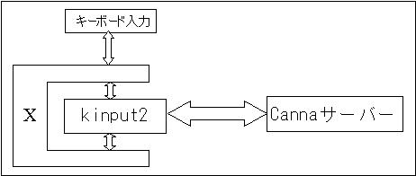
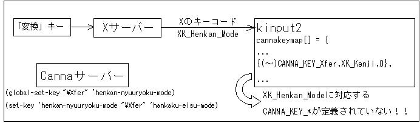
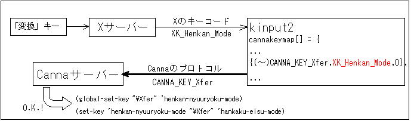

Cannaとkinput2の関係
「本題」に戻る
そもそもCannaとkinput2はどんな役割分担をしているのか？果たして.cannaはどちらの設定ファイルなのか？kinput2自体の設定はどこで行えるのか？
・・・意外とこれらの基本的かつ重要な問いに対して答えているサイトは少ないような気がします。・・・いえ、単に調べてないだけなんですけど。
でもね、でもね。パッケージ付属のドキュメント読んでるだけでもパッチ作れちゃうんだよ？何かあればすぐGoogleっていうのが馬鹿らしくなってこない？ねえ？
というわけで、CannaとXとkinput2がどんな関係になっているのか簡単な図にしてみました。

Cannaサーバーとkinput2の間は、Canna専用の通信プロトコルで結ばれています。
さて、この図からCannaとkinput2とXのつながりを考えてみます。（おそらくこのページを訪れた方のほとんどがkinput2とCannaについては大分学習済みだと思われますので、単なる復習になると思いますがご勘弁を。）
.cannaファイルの役目と「変換」キー
「本題」に戻る
Cannaのカスタマイズとくれば、真っ先に思い浮かぶのが「.canna」ファイルです。とにもかくにも、どんなサイトにもこのファイルのカスタマイズは必ず言及されているはずです。
んで、ですね。このファイルの中身。これ、Lispで書かれているのも殆どの人が知っています。
じゃあ、EmacsLispというのもあるけどそれとの関係は？
Cannaと.cannaを勉強していて最初に浮かんだ疑問がこれでした。「.cannaの解釈にはEmacsが一役買っているのかしらん」と考えてしまったんです。何でこんなこと考えたかというと、参考書には .canna のカスタマイズ項目と Emacsでtamagoやえせかんなを使うためのEmacs-Lispのカスタマイズ項目がまぜこぜで載っていたからです。
んじゃあ、Cannaパッケージを調べてみようとみてみたら・・・Emacsは全然でてきません。
後になってCannaのマニュアルPDFを読んでわかったんですが。.cannaで使われているLispは"canlisp"と呼ばれるCanna独自のLispで、Emacsとは何の関係もない。
これ、注意すべき第一点です。これに気づかないと、.cannaファイル中でEmacsLispのキーバインド定義をしてしまったりという間違いを犯します。
では.cannaファイル中でcanlispを用いると「変換」キーで半角・全角のトグルはどう設定されるかというと・・・（ちなみにデフォルトに近い設定をいじくった場合です）
(global-set-key "¥Xfer" 'henkan-nyuuryoku-mode) (set-key 'henkan-nyuuryoku-mode "¥Xfer" 'hankaku-eisu-mode)こんな感じです。canlispのドキュメントによると、jp106キーボードの場合ではキー文字列は次のような対応になるそうです。
"¥Nfer"→「無変換」キー "¥Xfer"→「変換」キーたとえばjust.cannaなどでは最初は「無変換」を表す"¥Nfer"が使われていました。
$ ps ux ... (kinput2のプロセスIDをゲット) ... $ kill -9 (kinput2のPID) $ kinput2 -cannaです。
# ls CHANGES.jp Canna.conf.conf Canna_conf.bak INSTALL Imakefile README.jp WHATIS.jp canuum/ cmd/ doc/ misc/ sample/ shion/ Canna.conf Canna.conf.dist ChangeLog INSTALL.jp README WHATIS canna/ ccustom/ dic/ lib/ mkrelease.sh* server/ # grep -r -n Xfer * canna/keydef.h:28:#define CANNA_KEY_Xfer 0x81 canna/keydef.h:46:#define CANNA_KEY_Shift_Xfer 0x91 canna/keydef.h:55:#define CANNA_KEY_Cntrl_Xfer 0x97 ... ccustom/keydef.h:28:#define CANNA_KEY_Xfer 0x81 ccustom/keydef.h:43:#define CANNA_KEY_Shift_Xfer 0x91 ccustom/keydef.h:52:#define CANNA_KEY_Cntrl_Xfer 0x97 ...canna/keydef.hをみてみると、制御系のキーコードを定義しているファイルのようです。ちなみに「無変換」キーを表す"Nfer"を調べてみると・・・
# grep -r -n Nfer canna/keydef.h 27:#define CANNA_KEY_Nfer 0x80 45:#define CANNA_KEY_Shift_Nfer 0x90 54:#define CANNA_KEY_Cntrl_Nfer 0x96 132:#define IROHA_KEY_Nfer CANNA_KEY_Nfer 147:#define IROHA_KEY_Shift_Nfer CANNA_KEY_Shift_Nfer 156:#define IROHA_KEY_Cntrl_Nfer CANNA_KEY_Cntrl_Nferとなりました。
・「変換」キー state 0x20, keycode 129 (keysym 0xff23, Henkan_Mode), same_screen YES, ・Shift+「変換」キー state 0x1, keycode 129 (keysym 0xff7e, Mode_switch), same_screen YES, ・「無変換」キー state 0x0, keycode 131 (keysym 0xff22, Muhenkan), same_screen YES, (なお、「無変換」キーに関してはShiftキーの影響はありませんでした。)・・・どうも・・・関連性は・・・無いような気がしてきます。つまり、単純にキーコードに定数を加減算したのがCANNA_KEY_***になっているのではない、ということです。
Xとkinput2と「変換」キー
「本題」に戻る
というわけで、まずは先ほどのxevで得られた「Henkan_Mode」や「Muhenkan」「Mode_switch」はどこに隠れているのか探します・・・つっても大体検討はついてますけどね。
こういった定義ファイルはincludeを調べてみた方が早そうです。
$ cd /usr/include/X11/ $ ls ... ... keysym.h keysymdef.h ... ... $ grep -r -n Henkan_Mode * keysymdef.h:86:#define XK_Henkan_Mode 0xFF23 /* Start/Stop Conversion */ keysymdef.h:87:#define XK_Henkan 0xFF23 /* Alias for Henkan_Mode */ $ grep -r -n Muhenkan * keysymdef.h:85:#define XK_Muhenkan 0xFF22 /* Cancel Conversion */どんぴしゃりでヒットしました。16進数表記もxevの結果と一致しています。
$ grep -r -n XK_Muhenkan *
lib/Canna.c:1311: case XK_Muhenkan:
lib/Canna.c:1618: {(unsigned char)CANNA_KEY_Nfer, XK_Muhenkan, 0},
lib/Canna.c:1631: {(unsigned char)CANNA_KEY_Shift_Nfer, XK_Muhenkan, ShiftMask},
lib/Canna.c:1638: {(unsigned char)CANNA_KEY_Cntrl_Nfer, XK_Muhenkan, ControlMask},
しかもですよ？XK_MuhenkanにはしっかりとCANNA_KEY_Nferが割り当てられているではありませんか。
$ grep -r -n CANNA_KEY_Xfer *
...
lib/Canna.c:1619: {(unsigned char)CANNA_KEY_Xfer, XK_Kanji, 0},
...
・・・見事に別のキー（「漢字」キーという、SolarisなどのUNIX系キーボードで使われている）が割り当てられているようです。
Cannaと.cannaとkinput2とXと「変換」キーのまとめ
「本題」に戻る
今までの関係を「修正前」と、期待される「修正後」で整理してみます。
・修正前：kinput2側でCANNA_KEY_Xferを送出するキーがXK_Kanjiになってしまっていた。XK_Henkan_Modeは未使用。

・修正後：XK_Henkan_ModeでCANNA_KEY_Xferを送出するよう変更する。XK_Kanjiは無効化する。

では、いよいよパッケージの修正・パッチ作成へと移ります。
修正パッチの作成とパッケージ化
「本題」に戻る
パッケージの作成ですが、注意点があります。今回のSRPMを利用するには Canna-devel と Wnn6-devel パッケージが必要です。ようするにCannaとWnn6のヘッダファイルが要り用なわけ。というわけで、入れておくかソースから手動でインストールしておいてください。
今回作成したパッチ、SRPM, RPMファイルは以下のリンクから入手できます。
2008/11月現在、情報が古すぎる為リンク削除。
| パッチ | |
| RPM | |
| SRPM |
$ su - # rpm -ivh kinput2-*.src.rpm # cd /var/src/rpm/SPECS # rpm -bp kinput2.spec ... # cd ../BUILD/ # cp -rp kinput-v3 kinput-v3.orig # cd lib/ # grep -r -n XK_Kanji ...(Canna.c と Canna.ia64 に変更必要箇所があるのを確認) ...すでにIA64用のパッチが当たっているらしく、Canna.c とCanna.ia64の二つがありました。どっちがどっちだかわかんなくなったので、とりあえず両方を以下のパッチっぽく変更します。
# cd /var/src/rpm/SPECS # rpm -bc kinput2.specs ... （異常なく終了した場合） # cd /var/src/rpm/BUILD （できたkinput2を念のためローカルコピーし、動作を確認してください。） （動作確認できればパッチ作成に移ります。） # cd /var/src/rpm/BUILD # diff -uNr kinput-v3.orig kinput-v3 > kinput2-v3-jp106_xfer.patch # cp kinput-v3-jp106_xfer.patch /var/src/rpm/SOURCES/ # vi /var/src/rpm/SPECS/kinput2.spec （ここでパッチを当てるよう記述します。具体的には Patch6: kinput2-v3-jp106_xfer.patch としてパッチを定義した後、 %patch5 -p1 -b .ia64 %patch6 -p1 -b .orig のようにパッチを当てさせるコマンドを記述します。） # rpm -ba /var/src/rpm/SPECS/kinput2.spec以上です。エラー無くパッケージが作成できれば終了です。
もっと簡単にxmodmapでキーを入れ換えてしまいませう。
「本題」に戻る
今更ながら気づいたんですが・・・
xmodmapを使って 「変換」キーのキーコードを XK_Kanji に割り当ててしまえばどうにかなっていたんじゃ・・・
というわけでやってみました。とりあえず、xmodmapがxinitrc中で呼ばれているか確認です。
$ cat .xinitrc
...
usermodmap=$HOME/.Xmodmap
...
if [ -f $usermodmap ]; then
xmodmap $usermodmap
fi
というわけで$HOME/.Xmodmapが存在していた場合、自動でxmodmapが実行されます。ほんじゃ.Xmodmapを設定しませう。| キー表記 | キーコード | キーシム |
| (例)「半角／全角(漢字)」 | 49 | Zenkaku_Hankaku |
| 「変換」 | 129 | Henkan_Mode |
keycode 129 = Kanjiこれでシステムを再起動させ、xevを実行させてみます。
$ xev ... keycode 129 (keysym 0xff21, Kanji) ...このように「変換」キーがX上では「漢字」キーとして認識されている事が確認できました。試しに.cannaでXferによる全角／半角切替えを実験してみたところ見事に成功。